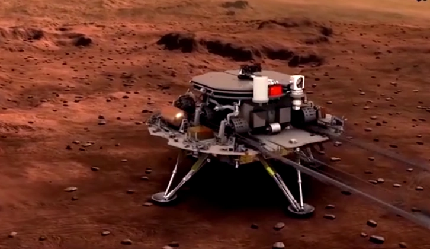

火星探测

天问一号任务成功实现了环绕、着陆和巡视三大目标。
天问一号是中国的首次火星探测任务，于2020年7月23日发射。2021年5月15日，祝融号火星车成功着陆火星乌托邦平原，开启了中国对火星的探索之旅。
祝融号火星车携带了多种科学仪器，用于研究火星的地质结构、气候环境以及寻找生命存在的迹象。它在火星表面的巡视探测为人类理解火星提供了宝贵的数据。
了解更多火星探测信息 NASA 了解更多火星探测信息 JAXA